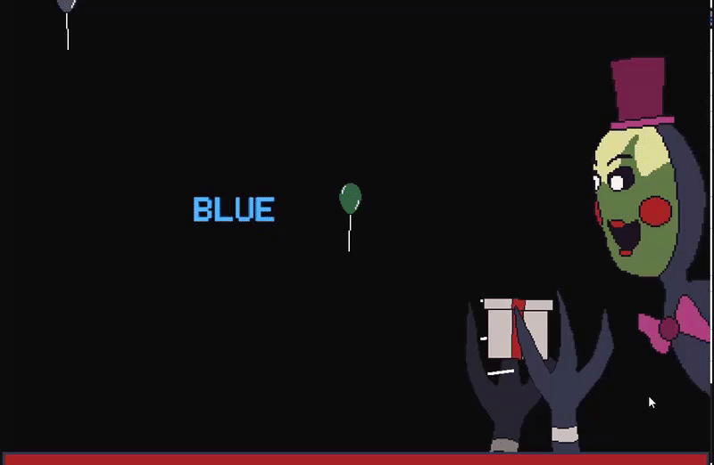
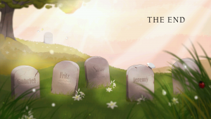

If you see any issues, please do make us aware via our Contact Form.
Thank you for browsing FNaFLore.com, we hope you enjoy the improvements that are coming to the site!
An amazing comedy podcast!

Fundraisers and Dramas and Opinions! Oh my!
Hello all.
it’s been a while since I’ve posted. I’ve meant to post many times, but real life has been so busy, as has the charity game. I feel I must give an update on several projects I’ve got going.
- Jessica’s Battle
- My Permaban
- FNaF6 – Thoughts
- My hopes for the future of FNaF
- What’s Next?
Jessica’s Battle
I know this is late, but I need to post it somewhere. I will try to find a better place to fully promote it.
For the past year and a half, former Freddit moderator Momerator has had Stage 4 cancer, originating on her hands. the result of this has been that she is no longer able to create any art, her financial situation has worsened (particularly in light of the medical bills), and this has led to her relying on food banks to feed her family and cashing in her life insurance to keep the house. On top of this, her survival rate for the next 5 years is 45%. This means it is now more likely that she will be dead in the next 5 years than alive. This is unacceptable.
So, myself, DirectDoggo, JuniorGenius and Invaderzz all confronted Momerator about this. We suggested a fundraiser half a year ago when she told us she had cancer, but she refused. She had been refusing help for so long, having felt like she was already a burden on the community – particularly after Scott sorted out her house last time. After some back and forth, she let us set up this fundraiser for her.
The fundraiser is to help her out of this hole. to get her life back on track by paying bills, paying for medical treatment and also to help pay for food.
Alongside this fundraiser announcement is A premature announcement of my Pokemon-esque fighting game I’ve been working on. We’re still developing it, but to try to promote the fundraiser, I am letting people who donate have appearances in the game. The game release is going to be waaaaaay into the future, and I likely will still need to recruit help for it, but I still want to help in some way.
We would like to thank the entire community for their time, on Momerator’s behalf. If you are able to donate, we would all be very thankful. If you aren’t, but are willing to pitch in with your own project to incentivise others, please feel free to contact us to get it listed, so everyone can find your project much easier. If you can’t do either of these things, but still wish to support, then please spread the word any which way you can, be it discussions through Discord, an art piece with a link to this or the fundraiser’s page or even fanfiction to promote the fundraiser. Any amount of attention you can contribute would be appreciated.
{kind=link}
My Permaban
April fools just came and went (Missed it? here’s our joke!), and with it, the knowledge that I am permabanned permeated to Freddit itself, rather that staying confined to just Discord and Reddit PMs.
Crack open outlook and prepare to once again mail Scott (as some of you usually do), because some drama is cooking up. This time, it is yet another story of moderator mismanagement, unjustifiable permanent bans and abuses of power. It’ll take a little while to get fully compiled, but I am currently working on a full article to tell you all about how and why I was Permabanned from the subreddit. The mere fact that these people are forcing my hand and wasting my time infuriates me. But, when moderators that should know better crack open these bans for the stupidest of reasons, one can’t resist publicly exposing them for their unprofessional conduct as people in control of a public forum, and the entire anarchy such ban precedents bring. Especially if that banhammer is squarely placed upon yourself.
I was banned for a joke. worse, I was banned for a joke campaign to push ban reform, the very thing they proved necessary by permabanning me over said joke campaign. Not only did they prove me right, but they guaranteed the thing they disagreed with has to go ahead. By keeping me banned and refusing proper ban reform, they prove the need for my campaign. We’ve got a “who blinks first” standoff, and I don’t intent to be the first to “cave in”.
They have already ceded ground, abandoning 2 of their ban reasonings, instead hoping to scream “DRAMA!” until I leave, in order to justify their ban. Over the coming months, I plan to refute these claims and dismantle their reasoning, brick by brick. Why months, do you ask? Because they’re exceedingly eager to mute me as soon as they are able. They know they have no leg to stand on, and so shut down the conversation before I can fully argue against it. My last two attempts to refute them were cut short from their end. It’s to the point that the head moderator is too scared to even speak in a server I also occupy. It’s quite sad actually, especially as this is all self-inflicted.
it may take many months, but I will come back. I always do.

And I’m a moderator of the Minecraft Wiki don’t forget, so I know my stuff. I worked with Curse for 3 years. Did you all remember that? Well I’m saying it again. I’m playing into the meme that I keep bragging about it, by continuing to do so and also explaining it in plain text. It’s how you defang memes. You lean into them and ruin them for everyone else by explaining them in painful detail. Perhaps, that should also be taken to heart by said moderators who get triggered over a colour or a parody character. But I do not intend to go deeper into that side of this controversy, as I’ve pledged to keep the second face of this drama separate to any/all fundraising news. Be on the lookout for the article, when it’s released. This is just the bare minimum of what has gone on.
Until then, I would like to point out and advertise a game that does a very nice job of putting this entire situation into a bit of a minigame scenario. Please check out SubwooferX3’s Nightmare Before Disney 2. Trust me, it’s a work of art, and I adore it completely.

FNaF6 – Thoughts
So, FNaF6 came out, and I thought I’d briefly touch on my thoughts about it. To put it bluntly, I’m glad we finally have a resolution.
I will say, my previous thought on FNaF6 held true. Perhaps Scott could see this himself. The game didn’t really solve the lore, but Scott’s greenlighting of parts of Game Theory’s video did. With so much now confirmed, the lore should be easy to piece together.
I had worked on a video to upload to YouTube, in which I’d actually talk in-depth about the FNaF franchise in it’s entirety. Sadly, the recent revelations basically ruined the purpose of that video. It’s good that it did, but it’s frustrating.
I had the entire thing transcribed, so I’ll share some non-released transcriptions, and just go over them quickly. Let me relay the exact thing I think Scott saw, and took action on.
I will be blunt, going and playing Sister Location, I did not care at all about what happened to Ennard, as well as what happened to Springtrap post-FNaF3. When I entered Sister Location, I had just one thought in my head. The same thought I had for all of the games, and likely, the same thought everyone else had. What is the bite of 87, what lore will be added to the canon in this.
I did not enjoy Sister Location as it’s own thing, but just another bag of puzzle pieces to the lore, some of which I just can’t place in my current puzzle setup. Even now, the story of Ennard or Springtrap post-FNaF3 couldn’t be less important to me. To me, they have left the stage. Perhaps we will see them again, but from now on, their future actions are only a continuation of the story. A story that is already far too incomplete.
Like most people, all I want to know, is, what parts of the current story did I miss? A book or movie is never enjoyable if random chapters are pulled out from it’s pages. That, I feel, is the itch the current theorist community has, and it’s an itch Scott hasn’t answered.
I feel, this sentiment is what broke Scott into finally confirming something upfront. He saw this notion, and he must have known, no matter what he makes, the shadow of the previous games would eclipse his next game. His next game would be terrible, because of the storytelling of the prior games.
And so, he dumped the story before FNaF6 could be released. This, in essence, defused that entire bomb. His method was far from elegant, but whatever. We have the lore. That’s literally all that long-term followers tend to care about. Then, FNaF6 could be seen as it’s own product. I strongly believe this is the entire psychology behind the release. A release I will note, I predicted within the video. I did not believe for a moment that FNaF6 would never come out. I went on to list my worries.
These were my thoughts on FNaF6. They were, in large part, vindicated worries. The lore in FNaF6 is surprisingly light. Yes, it introduces Henry. But, what else does it do? it only links Henry to the child in one minigame. Remarkably little lore was added to FNaF6, other than a definitive conclusion. There was nothing on the Bite, nothing on the number of kids killed, nothing on what purple guy was what etc.
All the big conclusions occurred within a comment, not within a game.
…
The first one I feel is the most clever way to sort this out, but not that profitable as a game or addition. The principle is simple. We have 5 games, and the standard FNaF game last 5 nights. The first solution I’ve thought up, is to update all games with a single night, embedded into the game itself. This would add a LOT of activity to all of the games at once. I recall the Potato promotion for Portal 2, which snuck in entire levels into unrelated games. Basically, do that, but within the FNaF franchise.
…
For the second solution to the theory burn issue, retcons. Retcons are not all that uncommon. Again, to go back to Portal, they retconned the ending, in preparation for Portal 2. It was a subtle retcon that simply elaborated the fate of Chell, and is crucial to bridging the gap between the two games. Another popular community is Homestuck. The retcons came so thick and fast, it became a central part of the story and universe mechanics.
…
For the last solution, a full game that tries to focus on wrapping up the lore. This one has the least potential in keeping the theorist fanbase alive. A new game would likely extend the theory burn, burning out more people if it fails to answer core questions, which are dotted around the timeline. it would be very hard to work this through in one single game. You’d need to jump like crazy over the timeline. it’d be very jarring.
These were my solutions to the issue of the Theory Burn in the community. It is somewhat frustrating that all of these possibilities were not proven right, instead leaving Scott to dump the lore on us in a comment. I did not see that coming. It’s rare that a vital and necessary piece of the lore is simply dropped in a comment on a community board outside of the canon of the game. That, professionally, doesn’t tend to happen. But, what’s done is done.
Overall, my opinion of FNaF6 is, it’s a nice bow to put onto the franchise. However, lore-wise, it was almost meaningless. What was the real show-stealer was his comment confirming Game Theory’s theory. Or, at least parts of it.
actually, I will admit, I am sort of disappointed in FNaF6. I am, as the gaming community would call me, a “Filthy Casual”. I have 7000 hours on Steam for various “Idle Clickers”. Yeah, it’s sorta a problem, judge me all you want. So, to see a game which is a FNaF game wearing the skin of a tycoon game, I wont lie, I was disappointed. I had hoped for at the least a clicker-like game with minigames, or at most, Theme Hospital with a FNaF bent. instead, threadbare buy-a-thons and no real purpose to the tycoon. it was just eye-candy. Little Inferno, but instead of burning the items, minigames happened and also there was a FNaF game. That was a letdown.
I laid out my frustrations, and before a bit of a personal breakdown (which was egged on by an admin and some of my critics conspiring to frustrate and embarrass me and the site, of which I do have proof), I was straw-manned by Scott. He said, in response to my saying the lore was a mess, that I should rename the site to Kizzylore if I rejected his lore.
I’m going to call him out on that directly and bluntly, pointing out the entire community. I point to Invaderzz, who lost faith in Scott. I point out the theorists that have left. I point out Matpat, who flat-out gave up on the lore and went with the “it’s all a dream”. I will point to every 87’er, who found it hard or impossible to accept the Bite of ’83. I point to anyone who believed that the FNaF:SL Purple Guy meant that there were 2 purple guys, indicated by their differences in FNaF2. I point to everyone who believed that FNaF4 was just a dream. I expand further the Matpat point, in that the entire Dream Theory was a thing for a LONG time.
Critique of your storytelling does not translate to believing your own version of the lore is correct. If you can find me a single person who believes Scott has never fucked up the lore/storytelling even once(including Scott himself), you will have found yourself a liar.
As I said in the welcoming blog post – the first ever post to this site:
This is why the main timeline is so threadbare. If I truly felt my theory was superior and infallable to the creator’s timeline, would I not have put in more points on that timeline? To claim I had such an attitude is disingenuous. I seperate FNaFLore and my own personal theory to the absolute detriment of the timeline page, as it seems my personal lore is actually a lot more in line with the Scott’s timeline. If my personal theory is burned down in order for the truth to come out, I will be ecstatic. I may think Scott’s skill for storytelling leaves much to be desired, sure. But that is a personal opinion. I will be happy to have found the story, and will go on to document it. That is the sole purpose of this site. To find the true FNaF story, and to lay it out.
At no point here did I once ever put forward my own story as canon. Even in the whole Popgoes drama here, I was mislead into believing Popgoes retconned the entire story post-launch. I was still trying to follow the lore of the creator, from the mouth of the main Clickteam developer/coder of the Popgoes game. I just wanted to follow the intended lore, not the lore that was arbitrarily changed that had no bearing in-game, which I later found out wasn’t the case and apologised completely. At no point even then did I intend to impose my view onto it. I intended to impose Popgoes’ view on it, prior to changing the entire story.
To say I claim the lore to be one way, and that any other way is not as good as my own personal theory is a complete strawman.
Still, that’s just a dump of thoughts on FNaF6, it’s buildup, and that one comment that really got under my skin. With that over, let me move onto the last point here.

My hopes for the future of FNaF
I hope that FNaF’s main story is over, but I don’t wish to see it dead. I would like to see more spinoff games released. I would like to see an honest-to-god tycoon, or a dedicated pixel pokemon spinoff, or something that takes the universe, and puts it into a different format, without being a front for a horror game.
I look forward to the movie, but I’m worried about it a bit. I don’t feel, if the Fright Dome event is to be taken into account for the movie quality, I would worry. I was not impressed by the similarities, particularly the on-stage animatronics. The eyes and the black strips are odd. They’d not look good for the movie. I felt the BTS animatronics were more accurate. It’s mostly the eyes, I think. Far too small. Very beady. If the movie can make more true-to-game animatronics, and shell out a bit more for props, I feel those worries should be easy to wash away.
I look forward to the conclusion to the trilogy of books. I am curious how the focus of the main character will shift. My inner environment designer is fascinated by the Freddy Fazbear location dictated in the second book, and I’d love to see more of that. some maze of extravagant waterfalls and sprawling layouts and arcade machines. I truly felt the sorta fantastical almost casino feel Scott/Kira put forward.
I’m not too much into the merch myself. if there are further books, I’ll probably keep getting them in paperback. At least, until the point where the brand is sold wholesale, and we get like 50 FNaF books a year.
I worry for the lore consistency in the coming months due to the annuals, guides and glorified activity books. only in the FNaF community have these been taken as literal canon. In no other franchise is an activity book considered proper lore. That concept to me is insanity. I do hope Scott addresses this. Until then, I cannot take them as canon.
Finally, I hope Scott takes a look at the entire series, and thinks, “I should retcon some of these games”. the “SAVE HIM” game is now blatantly wrong, and some more solid hints here and there (resolving SL/FNaF2’s places in the timeline respective of each other, emphasising the difference or similarities between Fredbear and Golden Freddy etc.) would be very useful for us. But by and large, beyond further clarification on the remaining mysteries, I hope FNaF’s main storyline can finally rest.
I see Ultimate Custom Night, and have high hopes for lore within it. But, I won’t be expecting too much. Especially as these are mostly considered non-canon, and I feel Scott has moved on from prior lore, and would not likely return to still unanswered points on the timeline
And, to clarify outstanding mysteries:
- The bite is still a sort of mystery. If it is Mangle as suspected, perhaps a subtle redesigned night 7/Custom night Mangle model would be ideal, as it’s believed the bite occurs between nights 6 and 7
- Clarification on the number of locations (and the specifics of if the FNaF2 location opened twice as I believe I prove here) would be useful.
- The number of dead kids. FNaF1 and 2 seem to conflict. is it 5? 10? 15? more? is Golden Freddy one of the first 5, or unrelated? This is not counting SL, which could expand the count greatly as the process of child murder seems to have been corporatised.
- Why the design change of Purple Guy in FNaF2? Also, who is William, and who is Michael? are any of them the FNaF guards of 1, 2 or 3?
- How are the original 5 kids freed? Happiest Day indicated it’s around FNaF6, but what happened to them between FNaF3’s ending and FNaF6?
- What is the proper order of the locations in the timeline?
- Is Golden Freddy the same as Fredbear?
- What’s the deal with the shadows?
- What’s the deal with the box?
Besides that, if FNaF is off the table, I’d want to see something original from Scott. His new IP. Something else for us to cling to.

What’s Next?
So, the drama post, fundraiser/charity game and FNaF6 reactions aside, I intend to update this site over time. Real life is taking a big load of my time, but I’m trying to press on. Though, truth be told, the biggest time-sink for me has been the game.
See, I’m trying to follow the spirit of the original games, and that includes obtaining the height, weight and stats of all characters. This game will have more characters than Pokemon Crystal in it. that’s more than 251 characters that I need to calculate the height, weight, attack, defence, S.attack, S.defence, speed etc. for! If anyone out there would care to help in regards to weight and height, please, let me know. I want this part of the game to be wrapped up, and I can’t sort out the demo until it is.
Theory Burn seems to have worn off, but it’s still there. It’s still a battle to update this site and find the motivation. But, I hope in the future, this will be less of an issue.
Keep an eye out for that drama post! I’ll see you all around, though mostly, only on this site or on my Discord Server!
Kizzycocoa – Owner and designer of FNaFLore.com